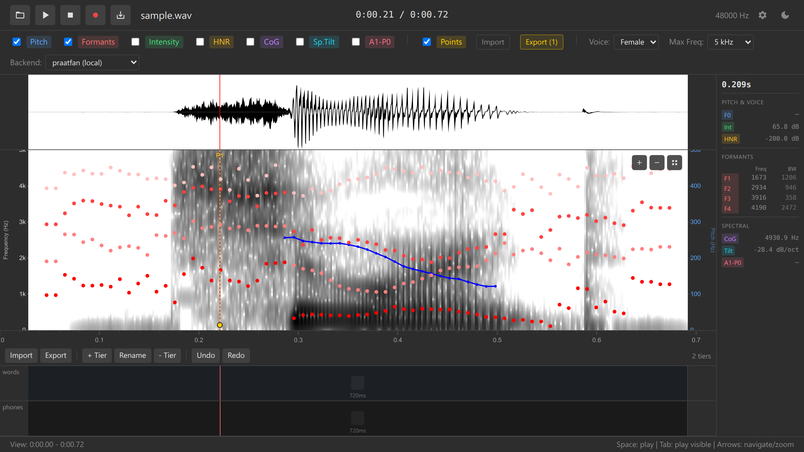

5. Data Collection
Collect acoustic measurements with data points
Overview
Data points allow you to collect acoustic measurements at specific time and frequency locations. Each data point automatically captures:
- Time and frequency coordinates
- Pitch (F0)
- Formants (F1-F4) and bandwidths (B1-B4)
- Intensity
- HNR, CoG, Spectral Tilt, A1-P0
- Labels from all annotation tiers at that time
This is ideal for building datasets for statistical analysis (vowel measurements, consonant measurements, etc.).
Why Use Data Points?
Manual approach (slow):
- Place cursor on vowel
- Read F1 from values panel
- Type F1 into spreadsheet
- Read F2 from values panel
- Type F2 into spreadsheet
- Repeat for 100+ vowels… 😰
Data points approach (fast):
- Double-click on each vowel
- Export all measurements to TSV
- Open in R, Python, Excel — ready for analysis! 🎉
Adding Data Points
Enable overlays you want to measure (Pitch, Formants, Intensity)
Double-click on the spectrogram at the point you want to measure

Adding a data point A yellow vertical dashed line appears with a marker
The point is added to the data points list
Repeat for each measurement location
For vowel formant measurements, double-click in the middle of a vowel’s steady state (where F1 and F2 are stable).
Keyboard shortcuts:
- Double-click on spectrogram — Add data point
- Ctrl+Z — Undo adding point
Viewing Data Point Values
Each data point captures all acoustic measurements:
Click on a data point line to select it
The values panel updates to show measurements at that point:
- Time: 0.452 s
- Freq: 1234 Hz (where you clicked)
- Pitch: 234 Hz
- F1: 523 Hz
- F2: 1987 Hz
- F3: 2743 Hz
- F4: 3543 Hz
- Intensity: 68 dB
- HNR: 12.3 dB
- CoG: 3456 Hz
- Labels: phones=“a”, words=“cat”

Data point values panel
The “Freq” value is where you clicked, not a measured acoustic property. It’s useful for reference but typically not used in analysis.
Moving Data Points
Adjust a data point’s position if you placed it slightly off:
Click and drag a data point line left or right (time) or up/down (frequency)
Release to finalize the position
Values update automatically based on the new position
Use playback (Space) to verify you’re measuring the correct location. The best measurement location is usually the acoustic midpoint of a vowel or steady state.
Removing Data Points
Right-click on a data point line
Select “Remove data point” from the context menu
The point is deleted
Keyboard shortcut:
- Click data point + Delete key — Remove selected point (if implemented)
- Ctrl+Z — Undo removal
Example Workflow: Measuring Vowels
Let’s collect formant data for all vowels in a sentence:
Load audio with a sentence (e.g., “see two cats”)
Enable Formants overlay (checkbox)
Optionally annotate vowels with a “phones” tier (section 4)
Zoom in on the first vowel (“ee” in “see”)
Find the vowel midpoint (where formants are stable)
Double-click at the midpoint
A data point appears
Repeat for each vowel:
- “ee” in “see” (high F2, low F1)
- “oo” in “two” (low F2, low F1)
- “a” in “cats” (mid F1, mid F2)
Export to TSV (section 6) for analysis

Data Points and Annotations
Data points automatically capture labels from ALL annotation tiers at that time:
Example:
If you have tiers:
- phones tier: interval “a” from 0.4-0.6s
- words tier: interval “cat” from 0.3-0.7s
- stress tier: interval “1” from 0.3-0.7s
And you add a data point at time 0.5s:
The exported TSV will include:
time freq pitch f1 f2 phones words stress
0.500 1500 234 698 1234 a cat 1This is extremely powerful for statistical analysis in R or Python!
Annotate your audio first (section 4), then add data points. This way, each data point inherits contextual labels automatically.
Use Cases
Vowel formant analysis:
- Add data points at the midpoint of each vowel
- Export TSV with F1, F2, F3, vowel label
- Plot vowel space in R (F1 vs F2)
VOT (Voice Onset Time) measurement:
- Add data points at burst and voicing onset for stops
- Export TSV with times
- Calculate VOT = voicing_time - burst_time
Pitch contour studies:
- Add data points at regular intervals (every 50ms)
- Export pitch values
- Analyze intonation patterns
Consonant acoustics:
- Add data points at fricative midpoints
- Export CoG, spectral tilt
- Compare sibilants [s] vs [ʃ]
Practice Exercises
- Collect formants for 3 different vowels
- Add one data point per vowel
- Check the values panel to see F1 and F2
- Note which vowel has highest F2
- Annotate + measure
- Create a “vowels” tier
- Annotate 3 vowels (e.g., “a”, “i”, “u”)
- Add data points in the middle of each
- Verify that labels appear in data point info
- Practice moving points
- Add a data point slightly off target
- Drag it to the correct position
- Observe how values change
- Practice undo/redo
- Add 3 data points
- Undo them all (Ctrl+Z × 3)
- Redo them (Ctrl+Y × 3)
Challenge: Record yourself saying 5 vowels: [i], [ɛ], [a], [ɔ], [u]. Add data points at the midpoint of each. Export to TSV (next section) and plot F1 vs F2 in Excel or R.
Troubleshooting
Double-click adds boundary instead of data point:
- Ensure you’re clicking on the spectrogram, not on an annotation tier
- Annotation tiers are below the spectrogram; click in the colored frequency display
Data point appears but values show “—”:
- Enable the relevant overlays (Pitch, Formants, etc.)
- Ensure WASM backend is loaded (check backend selector)
- Wait for analysis to compute (1-2 seconds after zoom)
Can’t move data point:
- Ensure you’re clicking and dragging the line, not near it
- Try clicking on the marker circle at the top of the line
Data point values seem wrong:
- Check you clicked at the correct time and frequency
- Verify the acoustic overlays show reasonable values
- For formants, ensure you’re clicking in a vowel, not a consonant
Too many data points, display is cluttered:
- Remove unnecessary points (right-click → Remove)
- Zoom out to see overall distribution
- Export and start fresh if needed
What’s Next?
Now that you’ve collected data points and created annotations, let’s learn how to export everything for further analysis.
Next: 6. Exporting →
Navigation: ← Previous: Annotations | Tutorial Overview | Next: Exporting →